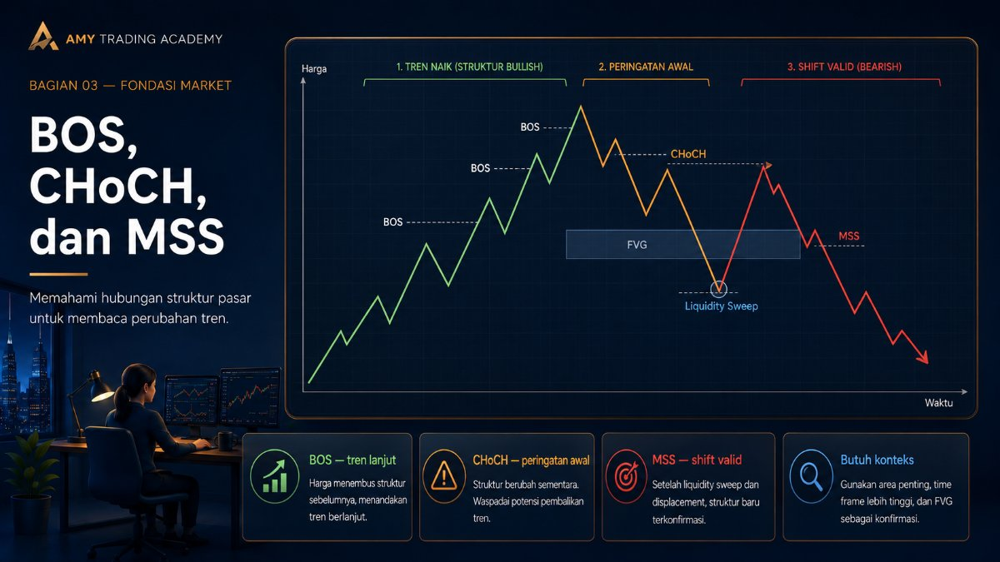
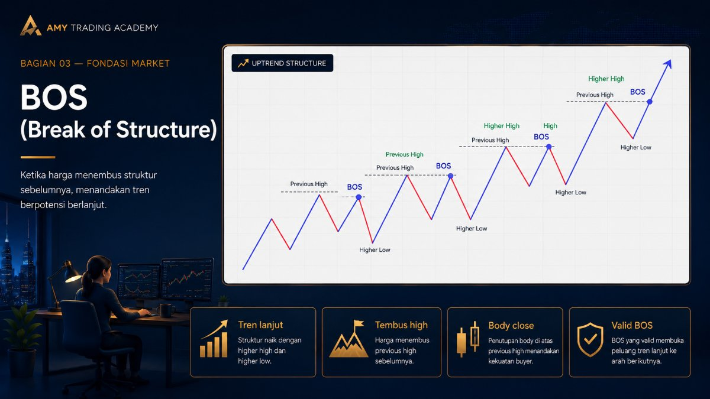
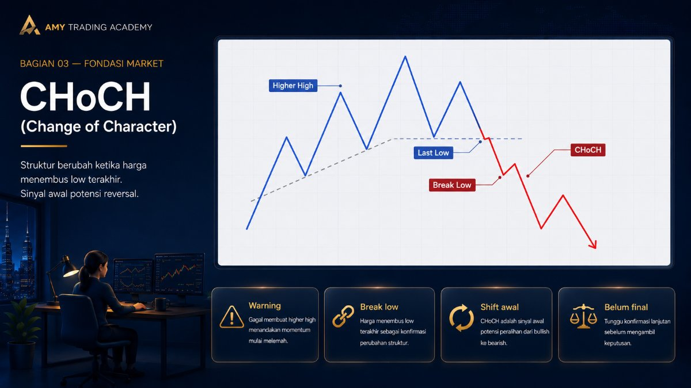
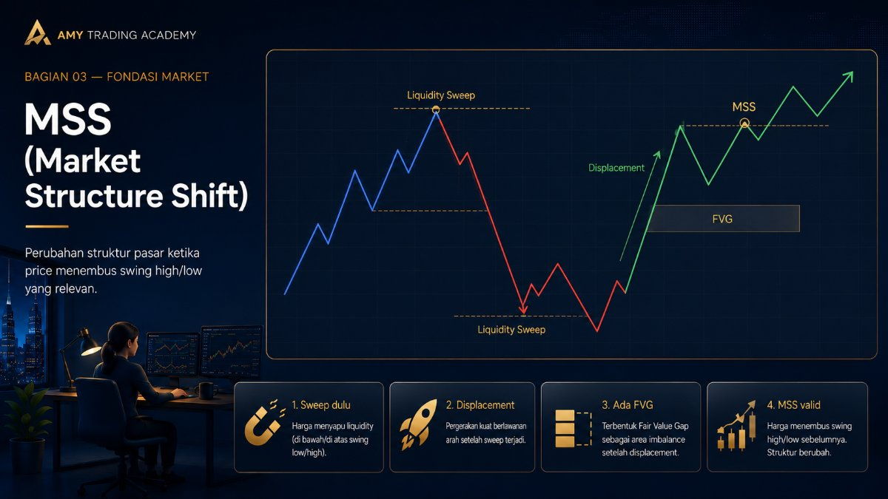
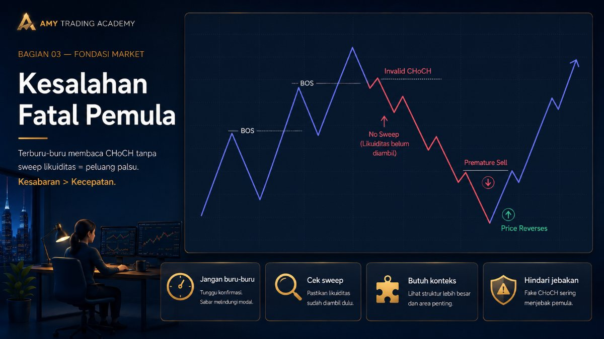

BOS, CHoCH, dan MSS

Selamat datang di pintu gerbang utama Smart Money Concepts (SMC) dan Inner Circle Trader (ICT). Tiga singkatan ini (BOS, CHoCH, dan MSS) adalah bahasa sandi yang wajib kamu kuasai untuk membaca arah pergerakan harga. Tanpa ini, kamu seperti membaca peta yang terbalik.
1. BOS (Break of Structure)

BOS adalah tanda bahwa tren saat ini masih berlanjut.
Ketika harga sedang Uptrend (naik), harga akan membuat puncak baru (Higher High). Ketika harga berhasil menembus puncak sebelumnya dan ditutup di atasnya (dengan body candle), kejadian penembusan itulah yang disebut BOS. Ini menunjukkan bahwa Smart Money masih menyetir ke arah yang sama.
Analogi BOS:
Bayangkan mobil yang sedang melaju kencang di jalan tol. Setiap kali mobil itu berhasil melewati gerbang tol berikutnya tanpa melambat, itu adalah BOS. Artinya, perjalanannya masih lanjut.
2. CHoCH (Change of Character)

CHoCH (dibaca coch) adalah peringatan dini bahwa tren mungkin akan berubah.
Katakanlah harga sedang asyik Uptrend (naik). Tiba-tiba, bukannya membuat puncak baru, harga malah turun tajam dan menjebol titik Low terakhir. Pergeseran karakter dari yang tadinya "selalu membuat High" menjadi "menjebol Low" inilah yang disebut CHoCH.
Sifat CHoCH biasanya terjadi di timeframe kecil (misalnya M5 atau M1) sebagai tanda awal sebelum tren besar benar-benar patah. Namun ingat, CHoCH belum menjamin 100% tren berbalik. Kadang ia hanya gerakan tipuan (manipulasi).
3. MSS (Market Structure Shift)

MSS adalah istilah dari ICT yang maknanya mirip dengan CHoCH, namun jauh lebih tegas dan valid.
MSS bukan sekadar harga menembus titik Low atau High terakhir. Sebuah penembusan baru bisa sah disebut MSS (Pergeseran Struktur Pasar) jika memenuhi syarat penting ini: penembusannya harus dilakukan dengan tenaga besar (Displacement) yang meninggalkan celah harga (Fair Value Gap).
Perbedaan Kunci:
- CHoCH: Mobil mengerem mendadak dan setirnya membelok sedikit (gejala awal mau putar balik).
- MSS: Mobil itu sudah benar-benar putar balik dengan injak gas penuh ke arah berlawanan, meninggalkan jejak ban yang tebal di aspal (meninggalkan FVG).
Kesalahan Fatal Pemula

Banyak trader pemula langsung mencoret-coret chart mereka: "Oh ini ada tembusan ke bawah, pasti CHoCH! Saatnya ngesell!" Lalu tak lama kemudian harga malah terbang naik.
Ingat aturan emas ini:
- Sebuah CHoCH atau MSS TIDAK VALID jika sebelumnya harga belum memakan Stop Loss retail (Liquidity Sweep/Sweep of Liquidity).
- Smart Money selalu mengambil bahan bakar (likuiditas) di satu sisi, baru kemudian mereka membanting setir (MSS) ke sisi lainnya.
Jadi, sebelum kamu memberi label MSS di chart, tanyakan dulu pada dirimu: "Apakah sebelum berbalik arah tadi, harga sudah menembus sebuah area untuk menyapu likuiditas?" Kalau jawabannya belum, jangan dipercaya. Itu mungkin hanya pergerakan Retracement biasa, bukan perubahan struktur.